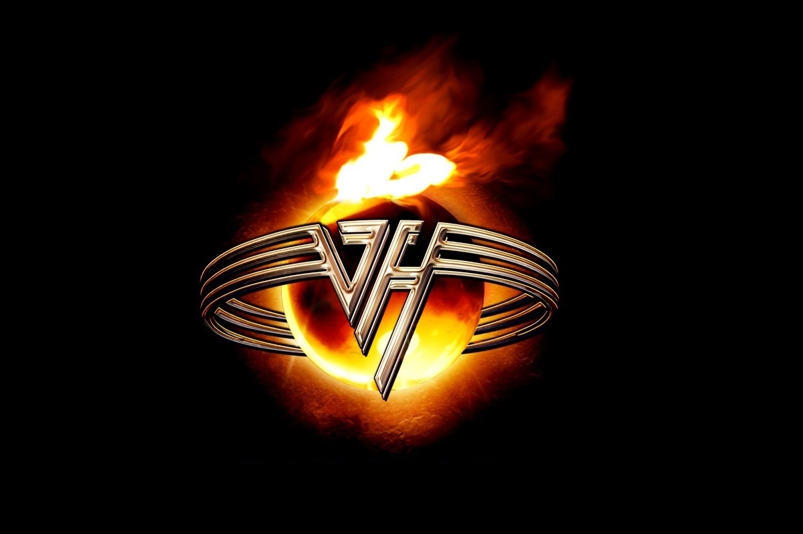
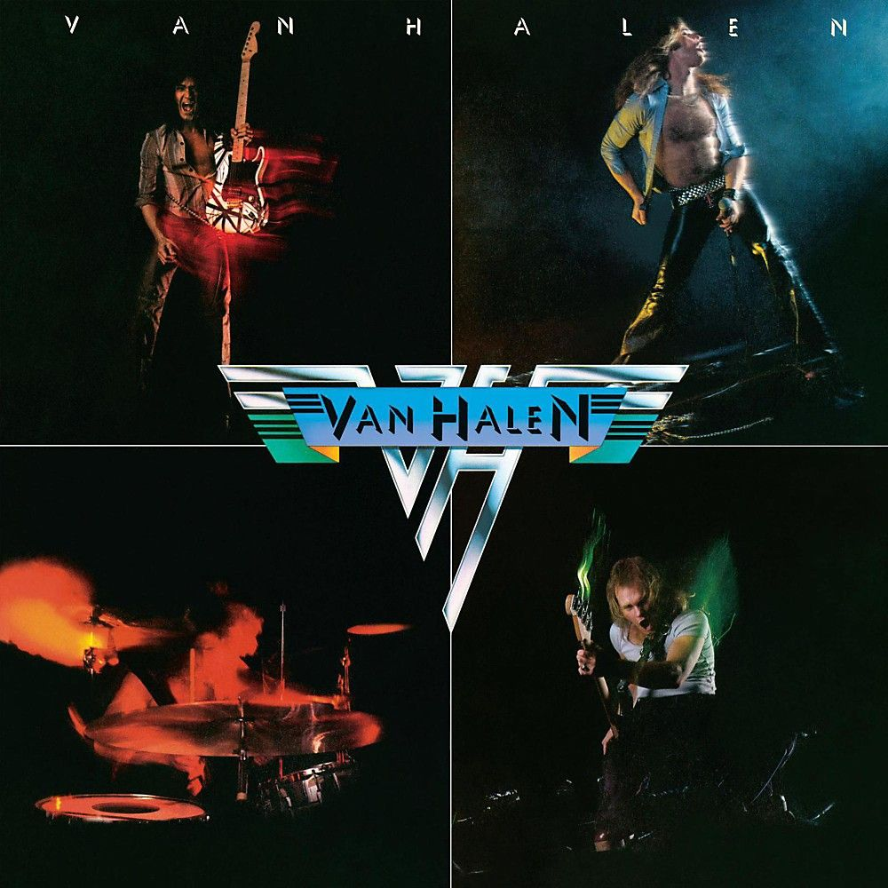
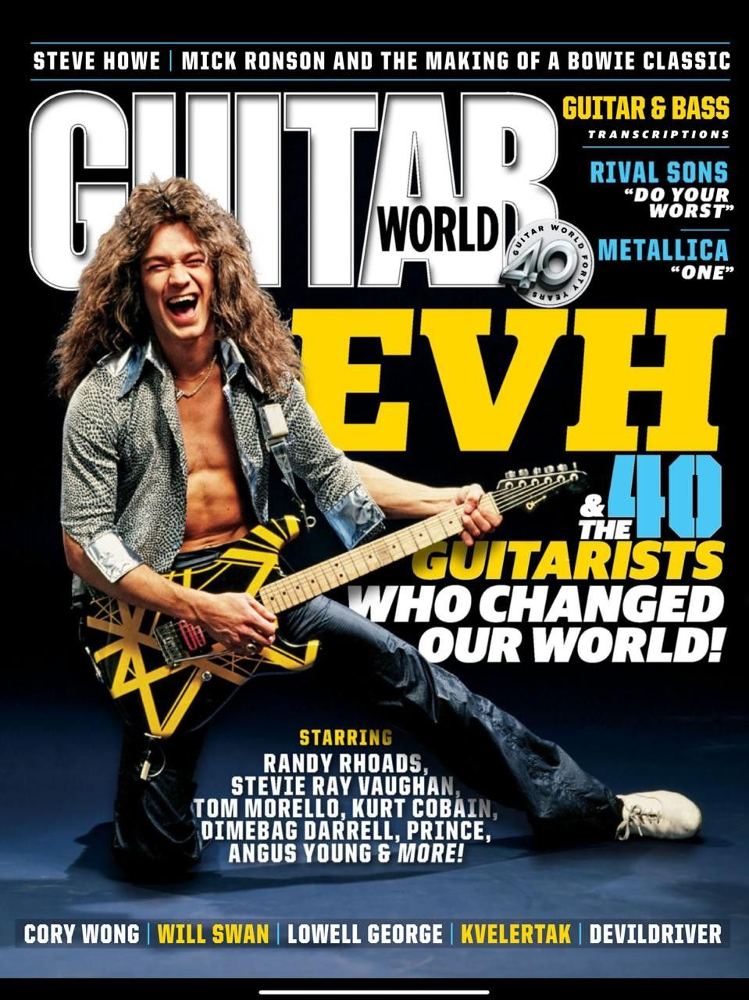
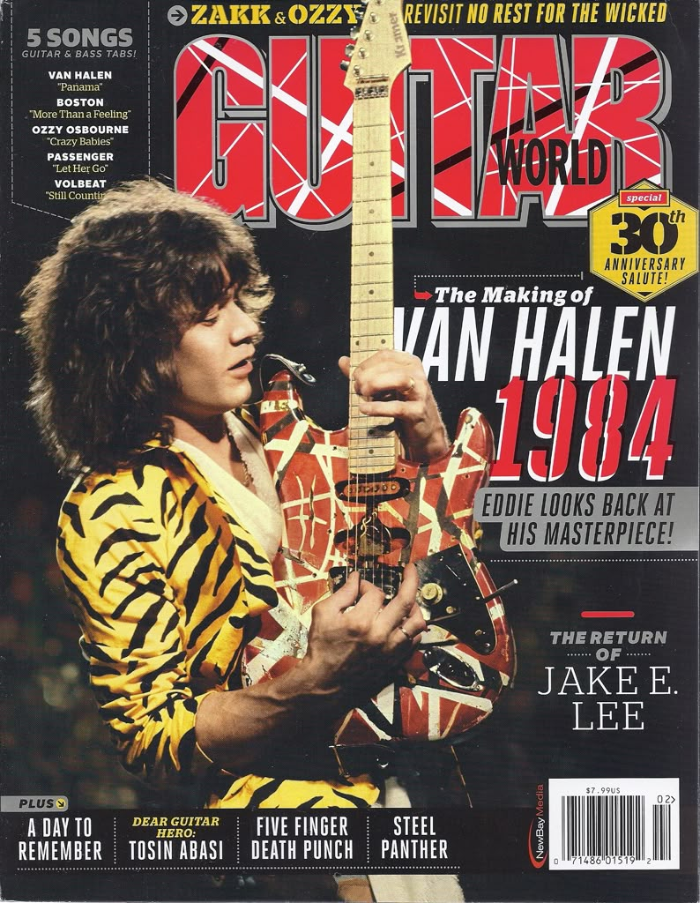
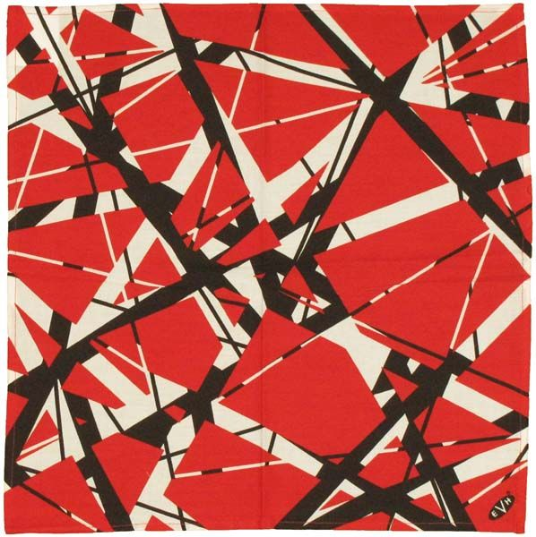

Van Halen
Путь от гаражной группы до рок-легенды

В 2020 году завершилась одна из самых ярких страниц в истории рок-н-ролла. Со смертью Эдди Ван Халена ушла целая эпоха, но его музыкальное наследие продолжает вдохновлять. Если в 70-х Aerosmith были главной хард-рок-группой Америки, то в 80-е на сцену вышли Van Halen — коллектив, созданный братьями Эдди и Алексом Ван Халенами.
За свою карьеру группа продала более 80 миллионов альбомов, 11 из которых вошли в топ-10 чартов, а 4 заняли первое место. В 2012 году Guitar World назвал Эдди лучшим гитаристом всех времен, и этот титул остается неоспоримым.
Как эмиграция изменила мир музыки
В 1962 году семья Ван Халенов переехала из Голландии в Пасадену, Калифорния. Их отец, саксофонист Ян Ван Хален, был талантливым музыкантом, но поначалу вынужден был подрабатывать мытьем посуды. Мать, Евгения, работала горничной.
Сыновья, Эдди и Алекс, с 6 лет занимались классическим фортепиано, но на Западном побережье быстро увлеклись рок-н-роллом. Изначально Эдди играл на барабанах, а Алекс на гитаре, но вскоре они поменялись инструментами.
Путь к успеху: от Mammoth до Van Halen
Первая группа братьев называлась Mammoth, но когда выяснилось, что такое название уже занято, они решили переименоваться в Van Halen. В тот же период к ним присоединились вокалист Дэвид Ли Рот и басист Майкл Энтони.
Группа быстро стала популярной в клубах Пасадены, Голливуда и Санта-Барбары. Они начинали с каверов на The Rolling Stones, David Bowie, Bad Company, но вскоре начали записывать собственные хиты.
Прорыв: как Van Halen изменили рок
В 1977 году на концерт Van Halen в клубе Starwood пришел продюсер Warner Bros. Тед Темплман. Увидев виртуозный стиль Эдди и харизму Рота, он убедил лейбл подписать с ними контракт.
Первый альбом Van Halen (1978) сразу взорвал чарты. Кавер на You Really Got Me (The Kinks) прозвучал в разы мощнее оригинала, а продажи превысили 12 миллионов копий.
Гениальность Эдди Ван Халена
Эдди изменил саму технику игры на гитаре. Его двуручный тэппинг, виртуозные соло и фирменная гитара Frankenstein стали культовыми.
Он вдохновлялся Хендриксом, Клэптоном и Пэйджем, но привнес в гитарное искусство новый уровень мастерства.
Van Halen стали рок-иконой 80-х, а их концерты — настоящим шоу. Фанаты сходили с ума от сценических трюков Рота, а гитарные партии Эдди поражали даже профессионалов.
Наследие Van Halen
Хотя Эдди Ван Халена больше нет, его вклад в музыку неоценим. Он вдохновил тысячи гитаристов, а его стиль до сих пор считается эталоном. Van Halen — это не просто группа, это целая эпоха в рок-музыке.
\ / /\ |\ | |_| /\ | |_ |\ |
\/ /--\ | \| | |/--\|__|__| \|
Участники
| Участник | Дата рождения | Дата смерти |
|---|---|---|
| Эдди Ван Хален (гитарист) | 26 января 1955 года | 6 октября 2020 года |
| Алекс Ван Хален (ударные) | 8 мая 1953 года | Жив |
| Дэвид Ли Рот (вокал) | 10 октября 1954 года | Жив |
| Майкл Энтони (басист) | 20 июня 1954 года | Жив |
Задайте свой вопрос



